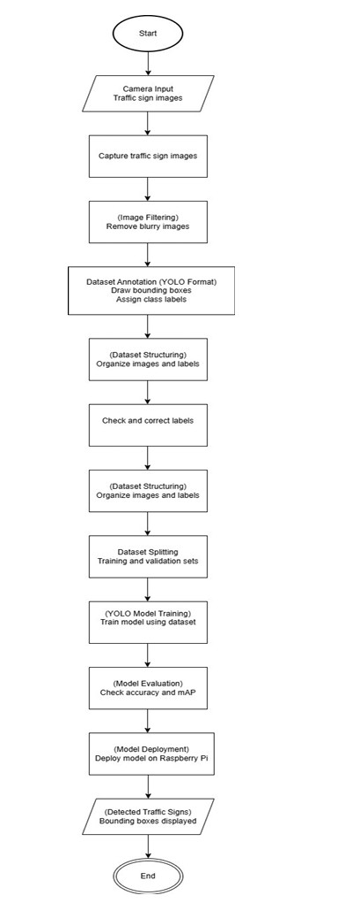
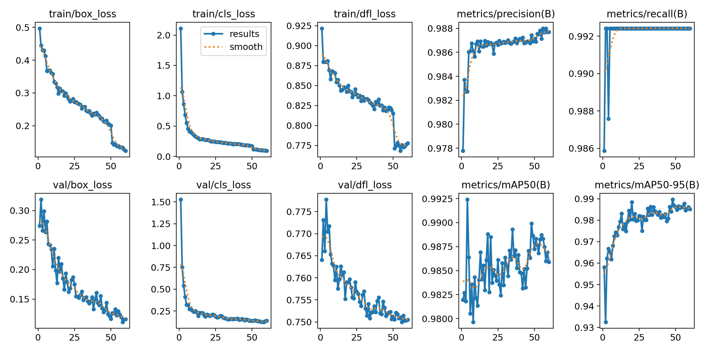
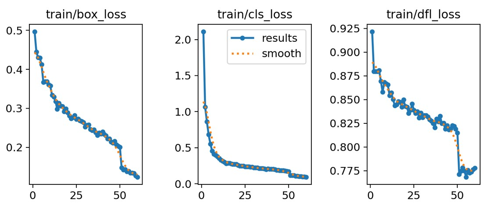
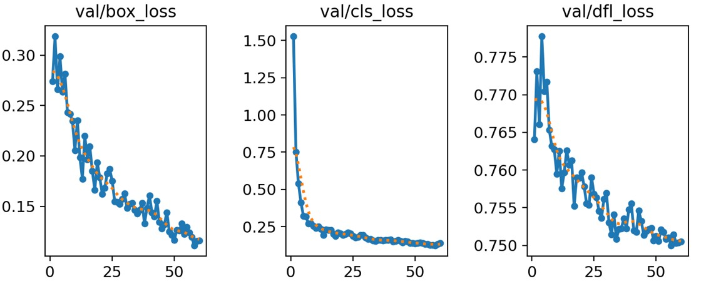
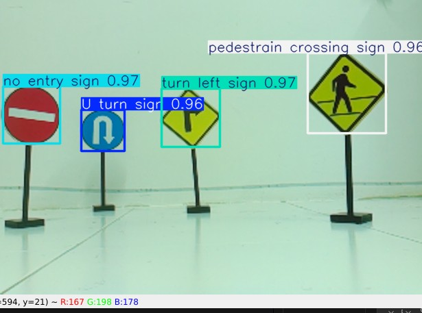
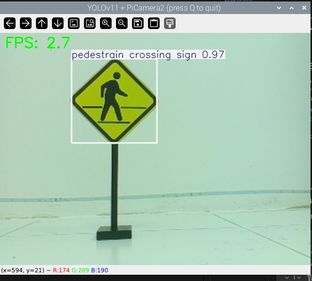

General Introduction
This project presents the development of a YOLOv11-based autonomous driving system
designed for real-time perception and navigation on embedded hardware. The system
integrates a deep learning object detection model to enable efficient visual
understanding of traffic environments. Visual input captured by an onboard camera
is analysed to detect traffic signs and navigation cues. The detection outputs are
translated into autonomous driving decisions such as stopping, turning, or
continuing forward motion.

Training Overview and Model Summary
The YOLO-based traffic sign detection model was trained using a curated and annotated dataset developed in Chapter 3. Training was performed on Google Colab to utilize high-performance GPU resources, ensuring efficient convergence and reduced training time.
Over multiple epochs, the model learned to accurately identify key traffic sign classes, including U-turn, No Entry, Pedestrian Crossing, and Turn Left. During training, model parameters were optimized through backpropagation to minimize classification, localization, and confidence losses.
The resulting model employs a deep convolutional architecture optimized for real-time object detection, achieving a balance between detection accuracy and computational efficiency. This makes the trained model well-suited for deployment on embedded platforms such as the Raspberry Pi 5.
Training Overview
The training results indicate stable and effective learning behavior throughout the process. Both training and validation losses consistently decrease, showing improved accuracy in object localization and classification without signs of overfitting.
Precision and recall rapidly reach high values, demonstrating reliable detection performance with minimal false detections. Additionally, the increasing mean Average Precision (mAP) values confirm strong detection accuracy across different IoU thresholds. Overall, the model achieves a good balance between accuracy and efficiency, making it suitable for real-time deployment on embedded systems such as the Raspberry Pi 5.

Training Loss
Training loss decreases smoothly, indicating effective learning behaviour.


Validation Loss
Validation loss closely follows training loss, demonstrating minimal overfitting.
Visual Detection Results
A crucial stage in the validation of object detecting systems is visual examination. The
qualitative findings show that the model can reliably identify and categorize traffic signs in real
time.
Sample detection results for each of the four traffic sign classes are shown in Figure 4.7.
Bounding boxes are used to encompass the detected signals, which are then labelled with the
class names and confidence ratings that correspond to them.
The model successfully identifies:
U-Turn signs with confidence scores up to 0.98,
,No Entry signs with confidence scores up to 0.97
,Pedestrian Crossing signs with confidence scores up to 0.97
,Turn Left signs with confidence scores up to 0.97.

Figure: Detection of multiple traffic signs with correct localisation.

Pedestrian Crossing Sign